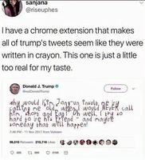

0
Colorado is rolling out an average-speed camera system that tracks vehicles across multiple points instead of catching them at a single camera, making it much harder for drivers to dodge tickets with apps like Waze and Radarbot. Motor1 reports: The state's new automated vehicle identification systems (AVIS) use several cameras to calculate your average speed between them, and if it is 10 miles per hour or more over the limit, you get a ticket. No longer will you be able to slow down as you approach a camera and speed back up after passing it, not that you should be speeding on public roads in the first place.
Colorado began deploying this new camera system after legislators changed the law in 2023, allowing AVIS for law enforcement use. The systems, installed on various roads and highways throughout the state, first began issuing warnings, but police began issuing tickets late last year.
The most recent section of road to fall under surveillance is a stretch of I-25 north of Denver, which brought the state's growing panopticon to our attention. It began issuing tickets on April 2. The Colorado Department of Transportation installed the cameras along a construction zone. The fine is $75 and zero points for exceeding the speed limit, and the police issue it to the vehicle's owner, regardless of who is driving.
Read more of this story at Slashdot.
"Consumer PC parts aren't the only things being gobbled up by the 'AI' industry," writes PCWorld's Michael Crider. "A Starcraft-inspired strategy game is shutting down its multiplayer servers because the hosting company got bought out for 'AI.'" The game will still be playable offline for now, but the shutdown highlights the ripple effects of the AI boom on the gaming industry. Amid the ongoing hardware shortages, AI companies are basically gobbling up as much infrastructure as they can to repurpose it for AI workloads. From the report: The game in question is Stormgate, a crowdfunded revival of the real-time strategy genre that has languished in the last decade or so. The developer Frost Giant Studios told its players on Discord (spotted by PC Gamer) that it would be unable to continue multiplayer access past the end of this month. The "game server orchestration partner" was bought by an AI company -- the developer's words, not mine -- which means that the multiplayer aspects of the game will have a "planned outage."
The devs say the game will be patched for offline play, presumably including its single-player campaign mode and co-op modes, but "online modes will not be available at that point." They're hoping to bring back online play in a later update, but that'll depend on "finding a partner to support ongoing operations." That sounds like old-fashioned player-hosted games with lobbies aren't in the cards, at least not yet.
Frost Giant's server provider is Hathora, which was bought by a company called Fireworks AI last month. Fireworks describes its offerings as "open-source AI models at blazing speed, optimized for your use case, scaled globally with the Fireworks Inference Cloud." So, yeah, Hathora's infrastructure will likely be used for yet more generative "AI." And according to GamesBeat, it's planning to shut down the game service aspect of its company completely. That means Stormgate probably isn't going to be the last game affected. Hathora also provides online services for Splitgate 2, among others. I'm contacting Hathora for comment and will update this story if I receive a response.
Read more of this story at Slashdot.
Microsoft plans to invest $10 billion in Japan from 2026 to 2029 to expand AI infrastructure, boost local cloud capacity, train 1 million engineers and developers, and deepen cybersecurity cooperation with the Japanese government. Reuters reports: The investment includes the training of 1 million engineers and developers by 2030, Microsoft said, which was unveiled during a visit to Tokyo by Vice Chair and President Brad Smith. In a statement, the company said the plan aligns with Prime Minister Sanae Takaichi's goal to boost growth through advanced, strategic technologies while safeguarding national security.
Microsoft will work with domestic firms including SoftBank and Sakura Internet to expand Japan-based AI computing capacity, allowing Ecompanies and government agencies to keep sensitive data within the country while accessing Microsoft Azure services, it said. It will also deepen cooperation with Japanese authorities on sharing intelligence related to cyber threats and crime prevention.
Read more of this story at Slashdot.
Archive of Our Own (AO3) is officially dropping its "beta" label after 17 years. The Organization for Transformative Works, the nonprofit behind the fanfiction site, said the site will keep evolving with new improvements even though it's no longer technically in beta.
"As the AO3 software has been stable for a long time, the change is mostly cosmetic and does not indicate that everything is finalized or perfectly working," the organizations says. "Exiting beta doesn't mean we'll stop continuing to improve AO3 -- our volunteer coders and community contributors will still be working to add to and improve AO3 every day."
Some of the features it's introduced over the years include a tag system, offline fanworks downloads, privacy settings that let creators restrict access to their work, and new modes for multi-chapter works. As it stands, the site says it has more than 10 million registered users and 17 million fanworks.
Read more of this story at Slashdot.
The Wall Street Journal shares the "wild behind-the-scenes story" of how the world's largest and most destructive botnet was uncovered and taken down, writes Slashdot reader sturgeon. "At times, the network known as Kimwolf included more than a million compromised home Android devices and digital photo frames -- enough DDoS firepower to disrupt internet traffic across the U.S. and beyond." From the report: Sitting in his dorm room at the Rochester Institute of Technology, Benjamin Brundage was closing in on a mystery that had even seasoned internet investigators baffled. A cat meme helped him crack the case. A growing network of hacked devices was launching the biggest cyberattacks ever seen on the internet. It had become the most powerful cyberweapon ever assembled, large enough to knock a state or even a small country offline. Investigators didn't know exactly who had built it -- or how. Brundage had been following the attacks, too -- and, in between classes, was conducting his own investigation. In September, the college senior started messaging online with an anonymous user who seemed to have insider knowledge.
As they chatted on Discord, a platform favored by videogamers, Brundage was eager to get more information, but he didn't want to come off as too serious and shut down the conversation. So every now and then he'd send a funny GIF to lighten the mood. Brundage was fluent in the memes, jokes and technical jargon popular with young gamers and hackers who are extremely online. "It was a bit of just asking over and over again and then like being a bit unserious," said Brundage. At one point, he asked for some technical details. He followed up with the cat meme: a six-second clip that showed a hand adjusting a necktie on a fluffy gray cat. Brundage didn't expect it to work, but he got the information. "It took me by surprise," he said.
Eventually the leaker hinted there was a new vulnerability on the internet. Brundage, who is 22, would learn it threatened tens of millions of consumers and as much as a quarter of the world's corporations. As he unraveled the mystery, he impressed veteran researchers with his findings -- including federal law enforcement, which took action against the network two weeks ago. Chad Seaman, a researcher at Akamai, joked at one point that the internet could go down if Brundage spent too much time on his exams.
Read more of this story at Slashdot.
Despite hundreds of billions of dollars in investment, nearly half of planned U.S. data center projects are being delayed or canceled. "One major reason behind these setbacks is the availability of key electrical components -- such as transformers, switchgear, and batteries -- that are used both at data center sites and outside of them," reports Tom's Hardware. "Meanwhile, grid infrastructure is also stressed by electric vehicles and electrified heating systems." Tom's Hardware reports: Approximately 12 gigawatts (12 GW) of data center capacity is expected to come online in the U.S. in 2026, according to data by market intelligence firm Sightline Climate cited by Bloomberg. Yet only about one-third of that capacity is currently under active construction because of various constraints.
Electrical infrastructure represents less than 10% of total data center cost, but it is as vital as compute hardware. A delay in any single element of the power chain can halt the entire project, which makes transformers, switchgear, and similar devices critical items despite their relatively small share of CapEx. Due to high demand, lead times for high-power transformers have expanded dramatically in the U.S.: delivery typically took 24 to 30 months before 2020, but waiting periods can stretch to as long as five years today, according to Sightline Climate cited by Bloomberg. For AI data centers, this is a catastrophe as their deployment cycles are under 18 months.
To address shortages, companies are turning to global markets. As a result, Canada, Mexico, and South Korea became the biggest suppliers of high-power transformers for AI data centers to AI data centers. At the same time, imports of high-power transformers from China surged from fewer than 1,500 units in 2022 to more than 8,000 units in 2025 through October, according to Wood Mackenzie data cited by Bloomberg. The volatility of exports from China does not end with transformers, as the PRC accounts for over 40% of U.S. battery imports, while its share in certain transformer and switchgear categories remains near 30%, according to Bloomberg.
Read more of this story at Slashdot.
An anonymous reader quotes a report from Ars Technica: Perplexity's AI search engine encourages users to go deeper with their prompts by engaging in chat sessions that a lawsuit has alleged are often shared in their entirety with Google and Meta without users' knowledge or consent. "This happened to every user regardless of whether or not they signed up for a Perplexity account," the lawsuit alleged, while stressing that "enormous volumes of sensitive information from both subscribed and non-subscribed users" are shared.
Using developer tools, the lawsuit found that opening prompts are always shared, as are any follow-up questions the search engine asks that a user clicks on. Privacy concerns are seemingly worse for non-subscribed users, the complaint alleged. Their initial prompts are shared with "a URL through which the entire conversation may be accessed by third parties like Meta and Google." Disturbingly, the lawsuit alleged, chats are also shared with personally identifiable information (PII), even when users who want to stay anonymous opt to use Perplexity's "Incognito Mode." That mode, the lawsuit charged, is a "sham."
"'Incognito' mode does nothing to protect users from having their conversations shared with Meta and Google," the complaint said. "Even paid users who turned on the 'Incognito' feature still had their conversations shared with Meta and Google, along with their email addresses and other identifiers that allowed Meta and Google to personally identify them." "Perplexity's failure to inform its users that their personal information has been disclosed to Meta and Google or to take any steps to halt the continued disclosure of users' information is malicious, oppressive, and in reckless disregard" of users' rights, the lawsuit alleged.
"Nothing on Perplexity's website warns users that their conversations with its AI Machine will be shared with Meta and Google," Doe alleged. "Much less does Perplexity warn subscribed users that its 'Incognito Mode' does not function to protect users' private conversations from disclosure to companies like Meta and Google."
Read more of this story at Slashdot.
Renewables made up nearly half of global installed electricity capacity by the end of 2025, "accounting for 85.6% of global capacity expansion," reports the Register, citing the International Renewable Energy Agency's (IRENA) 2026 Renewable Capacity Statistics report. "Per IRENA's data, that aforementioned 85.6 percent share of new power capacity additions was actually a decrease from 2024, when renewables were about 92 percent of global capacity additions. Yes, the share of total installed power capacity in 2025 rose again, but non-renewable capacity additions also rebounded sharply last year." From the report: Solar, in turn, was the dominant renewable technology, accounting for nearly three-quarters of last year's renewable capacity additions. Those additions totaled 692 GW in 2025, lifting installed renewable capacity by a record 15.5 percent year over year, IRENA noted. By the end of last year, renewables accounted for 49.4 percent of global installed electricity capacity, while variable renewable sources such as solar and wind represented roughly 35 percent of total capacity. For reference, it was only in 2023 that renewable energy sources crossed the threshold of generating 30 percent of the world's electricity.
Read more of this story at Slashdot.
The Artemis II crew has passed 100,000 miles from Earth and is now on a "free-return" path around the moon after a successful "translunar" injection burn. "Ladies and gentlemen, I am so, so excited to be able to tell you that for the first time since 1972 during Apollo 17, human beings have left Earth orbit," NASA's Dr Lori Glaze told a news conference. The Guardian reports: The astronauts -- the Americans Reid Wiseman, Victor Glover and Christina Koch, and a Canadian, Jeremy Hansen -- spent their first day in space performing checks on the spacecraft, which had never carried humans before. Later they had time to speak to US TV networks. "I've got to tell you, there is nothing normal about this," Wiseman told ABC News from the cramped interior of the capsule. "Sending four humans 250,000 miles away is a herculean effort, and we are now just realising the gravity of that."
Orion will travel about 4,000 miles (6,400km) beyond the moon before turning back, providing unprecedented and illuminated views of the lunar far side. If all proceeds smoothly, the astronauts will set a record by venturing farther from Earth than any human before -- more than 250,000 miles. The mission is part of a longer-term plan to repeatedly return to the moon, with the aim of establishing a permanent base that will offer a platform for further exploration. After the final engine burn, NASA said Wiseman took two "spectacular" images of Earth.
The first photo, called Hello, World, "shows the vast expanse of blue that is the Atlantic Ocean, framed by a thin glow of the atmosphere as the Earth eclipses the Sun and green auroras at either pole," reports the BBC. Another photo shows the view of Earth from inside the Orion spacecraft.
Read more of this story at Slashdot.
A Rome court ruled that several Netflix price hikes in Italy were unlawful because the company's contracts didn't adequately explain or justify future pricing changes. As a result, Netflix has been ordered to issue refunds that could total roughly 500 euros for some long-term subscribers. Ars Technica reports: The lawsuit was brought by Italian consumer advocacy group Movimento Consumatori, which alleged that the price hikes violate the Consumer Code, Italian legislation that aims to protect consumer rights. The Consumer Code says it's unlawful for a "professional to unilaterally modify the clauses of the contract, or the characteristics of the product or service to be provided, without a justified reason indicated in the contract itself," according to a Google-provided translation.
The court's April 1 ruling determined that Netflix's contracts were required to explain in advance why prices or other terms might change in the future. Because the price hikes were found to be imposed without providing customers with valid justifications, the court ruled that the new prices are invalid and ordered Netflix to refund affected subscribers. This comes despite Netflix reportedly providing a 30-day advance notice of the higher fees and allowing customers to cancel their subscriptions to avoid price hikes.
The court gave Netflix 90 days to inform millions of current and former customers via email, mail, its website, and Italian newspapers of their right to refunds or else face a penalty of 700 euros per day, Italian newspaper Il Sole 24 Ore reported today. Per Italian law, price increases that Netflix has issued or will issue beyond April 2025 are legal. At that time, Netflix adjusted its terms to state that contract terms could one day change due to technological, security, or regulatory needs, to clarify clauses, or to provide changes to the service, Il Sole 24 Ore reported.
Read more of this story at Slashdot.
An anonymous reader quotes a report from Wired: Today at a hearing of the Colorado Senate Business, Labor, and Technology committee, lawmakers voted unanimously to move Colorado state bill SB26-090 -- titled Exempt Critical Infrastructure from Right to Repair -- out of committee and into the state senate and house for a vote. The bill modifies Colorado's Consumer Right to Repair Digital Electronic Equipment act, which was passed in 2024 and went into effect in January 2026. While the protections secured by that act are wide, the new SB26-090 bill aims to "exempt information technology equipment that is intended for use in critical infrastructure from Colorado's consumer right to repair laws."
The bill is supported by tech manufacturers like Cisco and IBM, according to lobbying disclosures. These are companies that have vested interests in manufacturing things like routers, server equipment, and computers and stand to profit if they can control who fixes their products and the tools, components, and software used to make those upgrades and repairs. They also cite cybersecurity concerns, saying that giving people access to the tools and systems they would need to repair a device could also enable bad actors to use those methods for nefarious means. (This is a common argument manufacturers make when opposing right-to-repair laws.)
[...] During the hearing, more than a dozen repair advocates spoke from organizations like Pirg, the Repair Association, and iFixit opposing the bill. YouTuber and repair advocate Louis Rossmann was there. The main problem, repair advocates say, is that the bill deliberately uses vague language to make the case for controlling who can fix their products. [...] The Colorado Labor and Technology committee advanced the bill, but it still needs to go through votes on the Colorado Senate and House floors before going into effect. Those votes may take place as early as next week. Regardless of how the bill goes in the state, it's likely that manufacturers will continue their push to alter or undo repair legislation in other states across the country. "The 'information technology' and 'critical infrastructure' thing is as cynical as you can possibly be about it," says Nathan Proctor, the leader of Pirg's US right-to-repair campaign. "It sounds scary to lawmakers, but it just means the internet."
The current wording of the bill "leaves it up to the manufacturers to determine which items they will need to provide repair tools and parts to owners and independent repairers and which ones they don't," says Danny Katz, executive director CoPIRG, the Colorado branch of the consumer advocate group Pirg. "This is a bad policy and would be a big step back for Coloradans' repair rights."
iFixit CEO Kyle Wiens said in the hearing: "There's a general principle in cybersecurity that obscurity is not security," iFixit CEO Kyle Wiens said in the hearing. "The money that's behind the scenes, that's what's driving the bill."
Read more of this story at Slashdot.
An anonymous reader quotes a report from NPR: Responding to public health concerns about microplastics and pharmaceuticals in the nation's drinking water, the Trump administration for the first time has placed them on a draft list of contaminants maintained by the Environmental Protection Agency. The EPA announced the move Thursday, touting it as a "historic step" for the Make America Healthy Again, or MAHA, movement, which often raises concerns about toxic chemicals and plastic pollution in our food and environment. Also Thursday, the Department of Health and Human Services announced a $144 million initiative, called STOMP, to develop tools to measure and monitor microplastics in drinking water and in a later stage, to remove them.
The Safe Drinking Water Act requires the EPA to publish an updated version of its Contaminant Candidate List every five years. This is the sixth iteration of the list. Microplastics and pharmaceuticals appear in the draft of the upcoming list, alongside per- and polyfluoroalkyl substances, or PFAS, and dozens of other chemicals and microbes. Their inclusion on the list gives local regulators a tool to evaluate risks in their water supply, the EPA says, and it can set the stage for more research and regulatory action -- but doesn't actually guarantee that will happen.
Read more of this story at Slashdot.
Iranian strikes have reportedly knocked out key AWS availability zones in Bahrain and Dubai, leaving parts of both regions effectively offline for an extended period and forcing Amazon to urge teams and customers to shift workloads elsewhere. "These two regions continue to be impaired, and services should not expect to be operating with normal levels of redundancy and resiliency," an internal Amazon communication memo reads. "We are actively working to free and reserve as much capacity as possible in the region for customers, and services should be scaled to the minimal footprint required to support customer migration." Big Technology reports: With the war now nearing its sixth week, Iran has made Amazon infrastructure in the Gulf an economic target and is now eyeing its peers. Amazon's Bahrain facilities have been hit multiple times, including a Wednesday strike that caused a fire. And its facilities in the UAE also sustained multiple hits. The IRGC is threatening multiple other U.S. tech giants, including Microsoft, Google, and Apple.
Amazons infrastructure in Bahrain and Dubai each have three 'availability zones' or clusters of compute. Both Bahrain and Dubai have a zones that are "hard down" and and "impaired but functioning," per the internal communication. "We do not have a timeline for when DXB and BAH will return to normal operations," the internal post said.
Read more of this story at Slashdot.
Tony Isaac shares a report from NPR: When it comes to using AI, it seems some lawyers just can't help themselves. Last year saw a rapid increase in court sanctions against attorneys for filing briefs containing errors generated by artificial intelligence tools. The most prominent case was that of the lawyers for MyPillow CEO Mike Lindell, who were fined $3,000 each for filing briefs containing fictitious, AI-generated citations. But as a cautionary tale, it doesn't seem to have had much effect. The numbers started taking off last year, and the rate is still increasing. He counts a total of more than 1,200 to date, of which about 800 are from U.S. courts. "I am surprised that people are still doing this when it's been in the news," says Carla Wale, associate dean of information & technology and director of the law library at the University of Washington School of Law. "Whatever the generative AI tool gives you -- as in, 'Look at these cases' -- you, under the rules of professional conduct, you have to read those cases. You have to read the cases to make sure what you are citing is accurate."
"I think that lawyers who understand how to effectively and ethically use generative AI replace lawyers who don't," she says. "That's what I think the future is."
Read more of this story at Slashdot.
Longtime Slashdot reader fahrbot-bot writes: CU Boulder researchers are reporting that they have discovered an appetite-suppressing compound in python blood that helps the snakes consume enormous meals and go months without eating yet remain metabolically healthy. The findings were published in the journal Natural Metabolism on March 19, 2026.
Pythons can grow as big as a telephone pole, swallow an antelope whole, and go months or even years without eating -- all while maintaining a healthy heart and plenty of muscle mass. In the hours after they eat, research has shown, their heart expands 25% and their metabolism speeds up 4,000-fold to help them digest their meal. The team measured blood samples from ball pythons and Burmese pythons, fed once every 28 days, immediately after they ate a meal. In all, they found 208 metabolites that increased significantly after the pythons ate. One molecule, called para-tyramine-O-sulfate (pTOS) soared 1,000-fold.
Further studies, done with Baylor University researchers, showed that when they gave high doses of pTOS to obese or lean mice, it acted on the hypothalamus, the appetite center of the brain, prompting weight loss without causing gastrointestinal problems, muscle loss or declines in energy. The study found that pTOS, which is produced by the snake's gut bacteria, is not present in mice naturally. It is present in human urine at low levels and does increase somewhat after a meal. But because most research is done in mice or rats, pTOS has been overlooked. "We've basically discovered an appetite suppressant that works in mice without some of the side-effects that GLP-1 drugs have," said senior author Leslie Leinwand, a distinguished professor of Molecular, Cellular and Developmental Biology who has been studying pythons in her lab for two decades. Drugs like Ozempic and Wegovy act on the hormone glucagon-like petide-1 (GLP-1).
Read more of this story at Slashdot.
Politico : The White House's latest effort to enact legislation that would preempt state AI laws stalls as multiple Democrats dismiss the proposal as a partisan play — The resistance on Capitol Hill raises fresh doubts about whether Congress can pass any national laws for the rapidly advancing technology as states move ahead on their own.
Bloomberg : Chinese humanoid robot maker UBTech is seeking a chief scientist with an annual pay of as much as ~$18M; China's AI industry has eschewed mega pay packages — Chinese humanoid robot maker UBTech Robotics Corp. is seeking a chief scientist, offering an annual pay of as much as 124 million yuan …
Anna Tong / Forbes : Generalist, which raised $140M at a $440M valuation in 2025, releases GEN-1, an AI model to help robots handle high-dexterity tasks typically done by humans — The company says the next big leap in robotics won't come from fancier humanoid hardware. It will come from applying AI scaling principles …
Brody Ford / Bloomberg : Sources: Microsoft's Judson Althoff said Copilot sales hit “some pretty big audacious goals” in Q3; only 3% of customers were paying for Copilot as of January — Microsoft Corp., responding to Wall Street feedback, has pivoted its AI sales strategy to focus on selling Copilot rather …
Kalley Huang / New York Times : The Artemis II moon mission is one of the first times NASA has let astronauts fly with smartphones, giving them modified iPhones for taking photos and videos — The astronauts traveling in the Artemis II spacecraft were allowed to take smartphones with them. Sadly, they can't connect to the internet.
Leila Sheridan / Inc.com : Health data startup Bevel's CEO pushes back against Whoop's lawsuit that alleges Bevel copied the look of the Whoop app, saying Whoop's actions are “lawfare” — He says Whoop previously reached out to explore a collaboration before filing the suit.
Gergely Orosz / The Pragmatic Engineer : Sources: Mark Zuckerberg is back to writing code after a two-decade hiatus, submitting three diffs to Meta's monorepo, and is a heavy user of Claude Code CLI — Mark Zuckerberg and Garry Tan join the trend of C-level folks jumping back into coding with AI. Also: a bad week for Claude Code and GitHub, and more
Jay Peters / The Verge : Anthropic says Claude subscriptions will no longer cover usage on third-party tools like OpenClaw starting April 4 at 12pm PT, to better manage capacity — Claude subscriptions will no longer cover third-party access from tools like OpenClaw starting Saturday, April 4th.
Boris Cherny / @bcherny : Starting tomorrow at 12pm PT, Claude subscriptions will no longer cover usage on third-party tools like OpenClaw. You can still use these tools with your Claude login via extra usage bundles (now available at a discount), or with a Claude API key.
Miranda Nazzaro / The Hill : Filing: Anthropic has formed AnthroPAC, a new PAC that will be funded exclusively and voluntarily by its employees and is expected to be bipartisan — The artificial intelligence firm Anthropic is launching a new corporate political action committee, becoming the latest technology firm …
Financial Times : Sources: Meta's “Project Walleye” Ohio data center seeks $3B in loans in a first-of-its-kind deal where lenders will fund both the building and the power assets — ‘Project Walleye’ lenders would be first to fund both construction and power — A data centre campus backed …
Wired : Sources: Meta has paused its work with Mercor while it investigates a security breach at the data vendor; OpenAI says it is investigating the security incident — Major AI labs are investigating a security incident that impacted Mercor, a leading data vendor.
Robert Hart / The Verge : Utah launches a one-year pilot program allowing Legion Health's AI chatbot to renew prescriptions for 15 low-risk psychiatric maintenance medications — Some psychiatrists are asking what problem, exactly, this is solving. … Utah is allowing an AI system to prescribe psychiatric drugs without a doctor.
Alex Kantrowitz / Big Technology : Internal memo: Iranian strikes have rendered two AWS zones “hard down” in Dubai and Bahrain and Amazon expects them to be “unavailable for an extended period” — Amazon tells its employees to deprioritize these regions as the Iran war deals meaningful damage to its infrastructure in the Gulf.
Alex Heath / Sources : Interviews with Codex lead Alexander Embiricos, OpenClaw's Peter Steinberger, and others about OpenAI's upcoming superapp that combines ChatGPT with Codex — Why Codex is becoming the foundation for everything. Also: Fidji Simo's internal memo about taking a leave of absence. — ∙ Paid